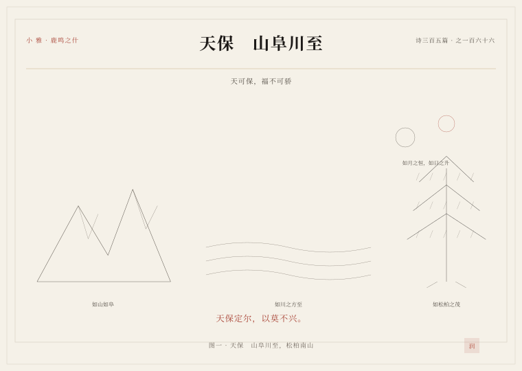
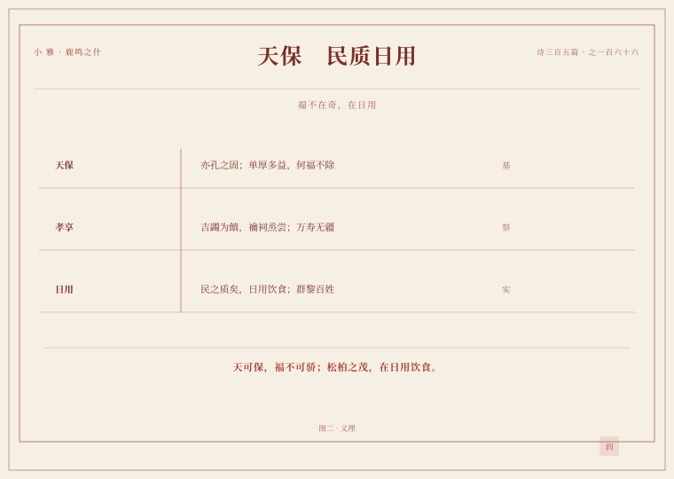

第一百六十六篇 天保
小雅 · 鹿鸣之什 SJ166
朗读 · 普通话
依经文原文朗读，章次不读出；配古琴底乐，不改速、不加拖腔。全库同一音色（豆包 TTS），非播音员录制。
一 解题
诗三判：
- 谁在说：臣下祝颂其君。天保而安，福禄而至；以山阜冈陵、川至日升、月恒松柏为喻。
- 说什么事：六章。前二章祝「单厚」「戬穀」；三章祝「莫不兴」；四章写祭祀；五章写神降民质；六章以日月南山松柏收。
- 为何编在此：鹿鸣、四牡、皇华、常棣、伐木，皆燕劳亲亲；天保则臣报君。亲亲而下，报上而终。
《毛序》：「《天保》，下报上也。君能下下以成其政，臣能归美以报其上焉。」
朱子《诗集传》：「赋也。保，安也。单，尽也。厚，厚也。除，除旧生新也。庶，众也。」二章：「戬，尽。穀，善。罄，尽。遐，远。」三章：「兴，盛。阜，大阜。陵，大阜。川至，如川之方至。」四章：「吉，吉日。蠲，洁。饎，酒食。禴祠烝尝，四时之祭。公，先公。君，先君。」五章：「吊，至。诒，遗。质，实。群黎，众民。遍，全。」六章：「恒，弦。骞，亏。崩，坏。承，继。」
本库的看法：《天保》不是一首堆砌福禄的颂诗，是一首「把福禄落回日用饮食」的诗。
山阜冈陵，是高；川至日升，是长；月恒松柏，是久。然五章忽说「民之质矣，日用饮食」：福不在奇，在百姓日用；寿不在仙，在不骞不崩。
须辨：单厚是尽厚，不是单薄；除是除旧生新，不是除灾；戬穀是尽善，不是剪谷；质是实，不是人质；恒是月上弦，不是永恒。断语：天可保，福不可骄；松柏之茂，在日用饮食。
先辨五事：「单厚」是尽厚，不是单薄；「除」是除旧生新，不是除灾；「戬穀」是尽善，不是剪谷；「质」是实，不是人质；「恒」是月上弦，不是永恒。
二 经文
第一章
天保定尔，亦孔之固。俾尔单厚，何福不除？
俾尔多益，以莫不庶。
第二章
天保定尔，俾尔戬穀。罄无不宜，受天百禄。
降尔遐福，维日不足。
第三章
天保定尔，以莫不兴。如山如阜，如冈如陵。
如川之方至，以莫不增。
第四章
吉蠲为饎，是用孝享。禴祠烝尝，于公先王。
君曰卜尔，万寿无疆。
第五章
神之吊矣，诒尔多福。民之质矣，日用饮食。
群黎百姓，遍为尔德。
第六章
如月之恒，如日之升。如南山之寿，不骞不崩。
如松柏之茂，无不尔或承。
三 韵读
- 一章：固、厚、除、庶，鱼、侯相叶。声厚。
- 二章：穀、宜、禄、福、足，屋、支交错。声满。
- 三章：兴、阜、陵、增，蒸、东相叶。声高而长。
- 四章：饎、享、尝、王、疆，之、阳相叶。声敬。
- 五章：福、食、德，职部相叶。声实。
- 六章：恒、升、崩、承，蒸部相叶。声久。
读法：前五章句句祝，末章四「如」一气而下。祝愈高，末章愈要落到底：月、日、山、松柏，皆有其常，不是奇迹。
四 字义与名物
- 保：安。定：安定。孔固：甚固。俾：使。单厚：尽厚。除：除旧生新。多益：多增益。庶：众。
- 戬穀：尽善。罄：尽。百禄：百种福禄。遐福：远福。维日不足：只怕日子不够。
- 兴：盛。阜：大阜。冈：山脊。陵：大阜。川至：如川水方至。增：加。
- 吉：吉日。蠲：洁。饎：酒食。孝享：孝祭。禴祠烝尝：四时祭名。公：先公。先王：先王。卜：卜问。无疆：无穷。
- 吊：至。诒：遗、赐。质：实。日用饮食：日常饮食。群黎：众民。百姓：百官族姓。遍：全。尔德：你的德。
- 恒：月上弦。升：升。骞：亏。崩：坏。茂：盛。承：继。
五 今译
一章：上天安定你，甚为牢固。使你尽厚，什么福不除旧生新？使你多益，没有不众。
二章：上天安定你，使你尽善。没有不宜，受天百禄。降你远福，只怕日子不足。
三章：上天安定你，没有不盛。如山如阜，如冈如陵。如川水方至，没有不加。
四章：吉日洁治酒食，用来孝祭。禴祠烝尝，祭于先公先王。先君说卜告你，万寿无疆。
五章：神明降临，赐你多福。百姓朴实，日用饮食。群黎百姓，都蒙你的德。
六章：如月上弦，如日东升。如南山之寿，不亏不崩。如松柏之茂，没有不继承你。
六 章旨
- 一章：天保孔固，是「基」；单厚多益，是「积」；福自固始。
- 二章：戬穀罄宜，是「德」；百禄遐福，是「报」；福自德出。
- 三章：山阜冈陵，是「高」；川至日增，是「长」；高而长，非一时之盛。
- 四章：吉蠲孝享，是「祭」；万寿无疆，是「祝」；寿自祭敬。
- 五章：神吊多福，是「天」；民质日用，是「人」；天福落于日用，是诗眼。
- 六章：月日山柏，是「常」；不骞不崩，是「久」；久在常，不在奇。
七 诗教
- 福在日用：「民之质矣，日用饮食」八字，把天保从天上拉回地上；百姓吃得安，才是真福。
- 寿在常：南山不骞不崩，松柏不凋，是常；求奇寿，则失常寿。
- 报上以德：臣祝君，不谀以权，而祝以「戬穀」「民质」；祝德，不祝势。
八 分寸与边界
- 不把「单厚」读成单薄：单是尽，厚是厚；读成单薄，则祝辞成讥。
- 不把「除」读成除灾：除是除旧生新；读成除，则「何福不除」成问灾。
- 不把「戬穀」读成剪谷：戬穀是尽善；读成农事，则全章失义。
- 不把「质」读成人质：质是实、朴；读成人质，则「民之质」成暴政。
- 不把「恒」读成永恒：恒是月上弦；读成永恒，则与「日升」不类。
九 存疑
- 诗旨：毛序「下报上」，朱子从之；一说「报神」。本库从报上，兼取祭神。
- 「单厚」：毛传「单，信也；厚，厚也」；朱子「单，尽也」。从尽厚。
- 「除」：毛传「除旧生新」；一说「授」。从除旧生新。
- 「禴祠烝尝」：四时祭名，顺序不必按四时。从诗序，不校其次。
- 「恒」：毛传「弦」；朱子「弦」。从上弦。
十 跨典
- 《尚书》「天听自我民听，天视自我民视」；此篇「民质日用」，正是天保之实。
- 《老子》「天长地久」；此篇月日山柏，皆取「常」义。
- 《礼记》「祭者，教之本也」；此篇四时孝享，是祭以立本。
十一 双卡与图
六对：
| 单厚（尽厚） |
单厚（单薄） |
| 除（除旧生新） |
除（除灾） |
| 戬穀（尽善） |
戬穀（剪谷） |
| 质（实、朴） |
质（人质） |
| 恒（月上弦） |
恒（永恒） |
| 日用饮食（民生） |
日用饮食（享乐） |

图一 · 天保 山阜川至，松柏南山

图二 · 天保 民质日用，不骞不崩